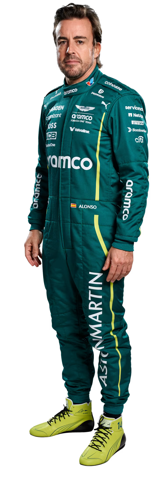
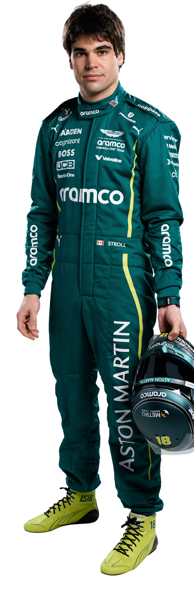

A primeira incursão da Aston Martin na Fórmula 1 — há mais de meio século — durou apenas cinco corridas. Desta vez, no entanto, é sério. Esta equipa de F1 não é estranha ao sucesso, tendo vencido sob o nome original de Jordan e mais recentemente como Racing Point, em 2020. Reconhecida pela capacidade de superar expectativas, e agora com um bicampeão a liderar a formação de pilotos — e o mais famoso projetista da F1 a juntar-se em 2025 — a Aston Martin é definitivamente uma equipa a observar…